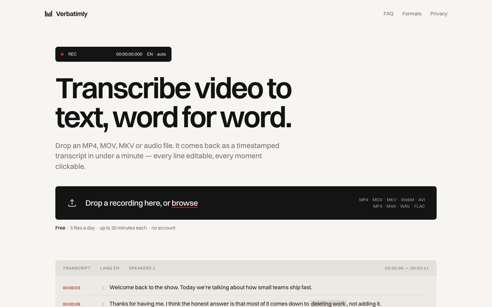
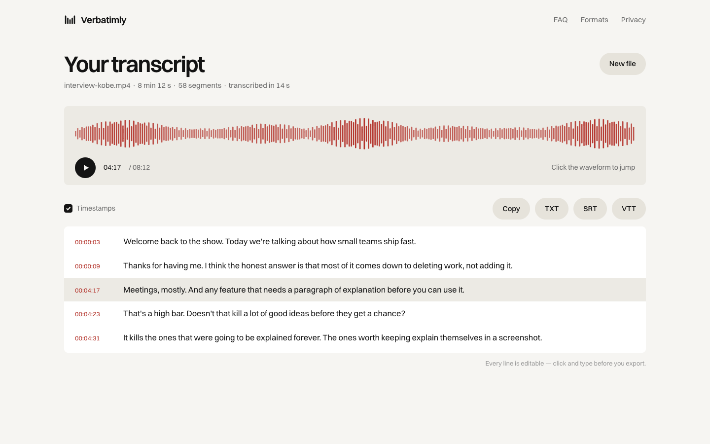
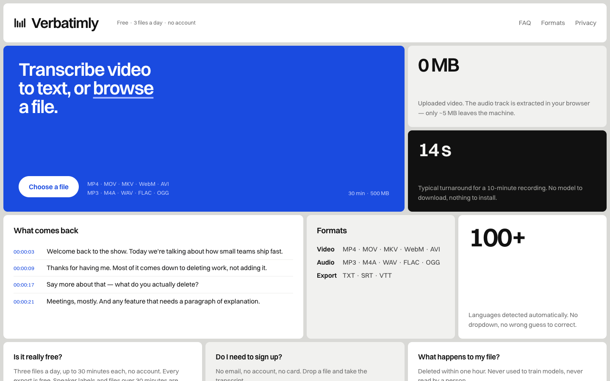
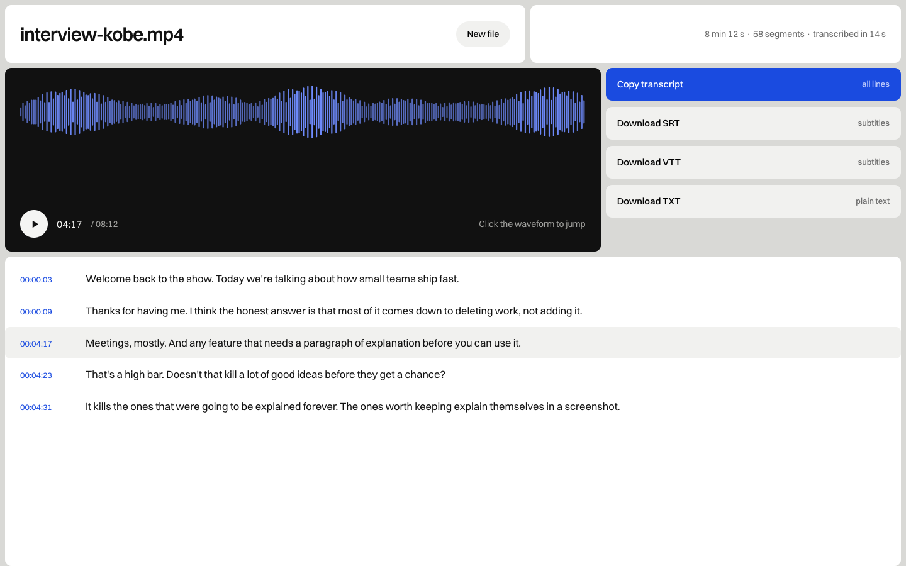
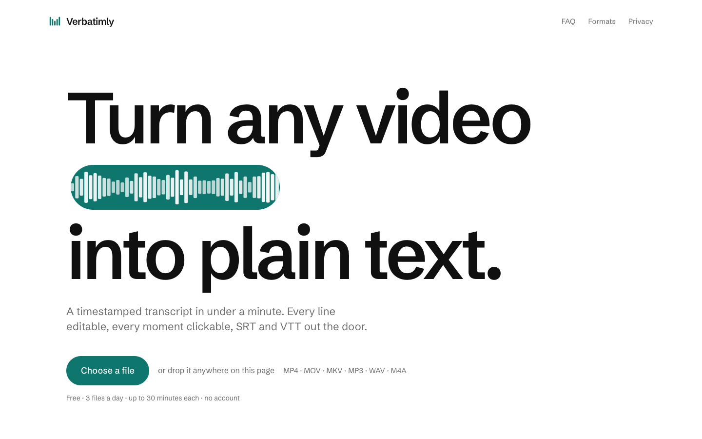
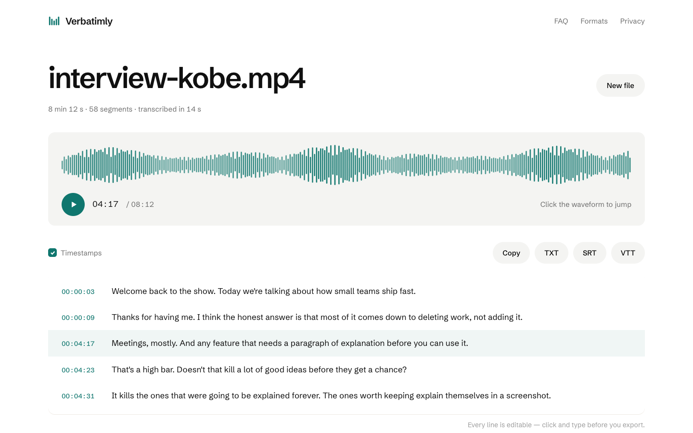

同一套功能与内容，三种排版语言。看首屏（左）和结果页（右），挑一个方向，我再按它落地。
把产品输出当主角：页面像一份正式记录——录音状态条、时间码、编号行。产品是什么，页面就长什么样。适合建立"准确、可信"的印象，记者、研究工作场景最贴。


信息密度最高的一版：整页是一块块拼接的格子，上传框是最大的那块蓝色格子，其余格子分别装样本、格式、语言、FAQ。第一屏就能看到全部能力，不藏东西。


视觉冲击最强：一句大字撑满首屏，波形胶囊嵌在句子中间当"词"用。最容易记住，也最像有品牌的产品而不是又一个工具站。代价是首屏信息少，上传按钮是唯一动作。


三版都只是视觉稿：按钮不会真的转录，波形是静态的。选中方向后我把真实功能接上（视图切换、分阶段进度条、可点击波形、logo）。